Day 37 - 31 May 2018 (Veules-les-Roses)
We were due to travel into Dieppe but a monumental deluge of rain caused us to turn off into Veules-les-Roses - and we were very pleased we made the detour. This pretty little village contains the church of St.Martin which dates from the thirteenth century and has the shortest sea-bound river (the Veules) in all of France at only 0.742 miles. Its water is used for growing watercress. On this day the water was pouring through the village, testing its flood defences to the limit and then out to sea where it created a red, muddy stain in the English Channel (La Manche).
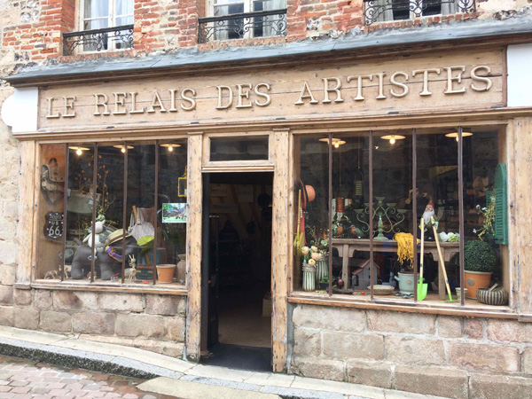
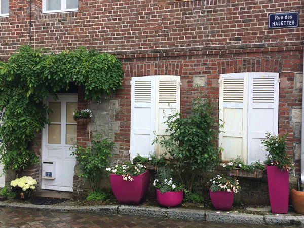
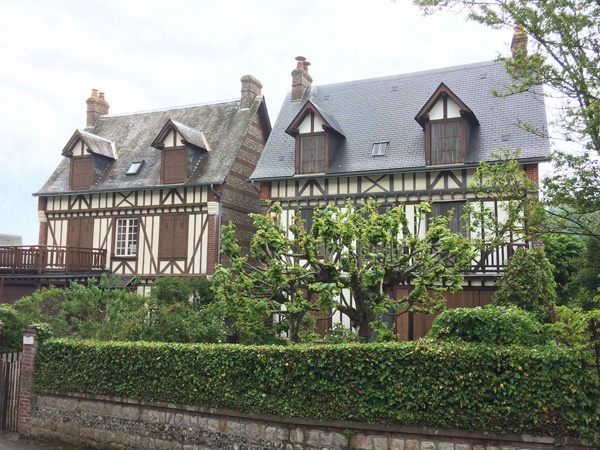
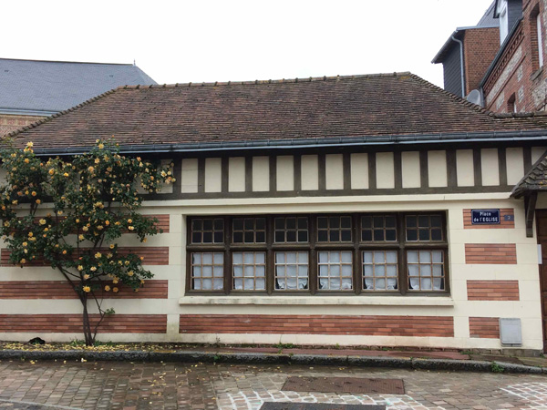
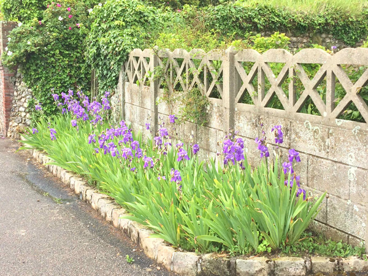
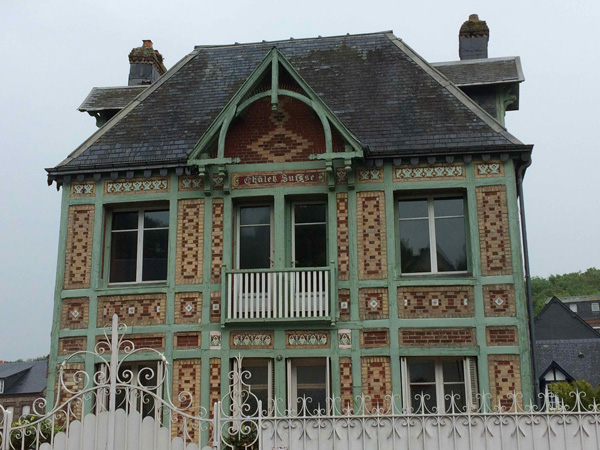
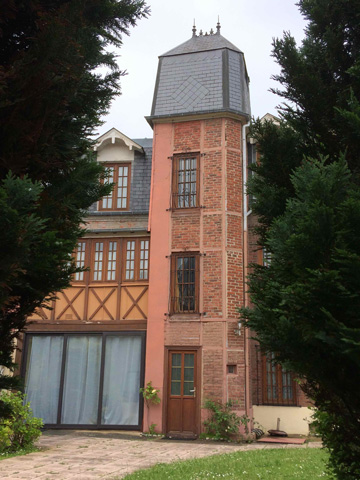
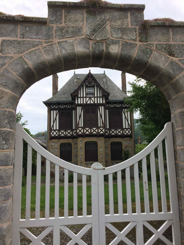
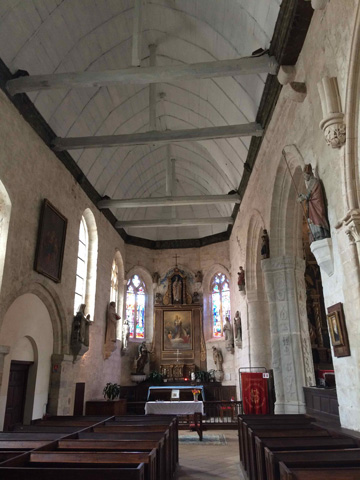
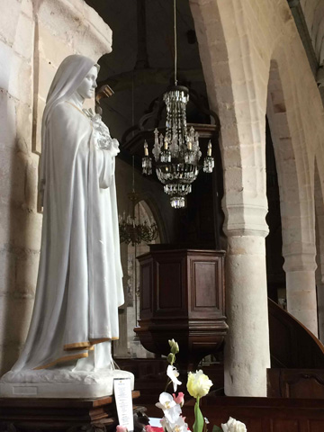
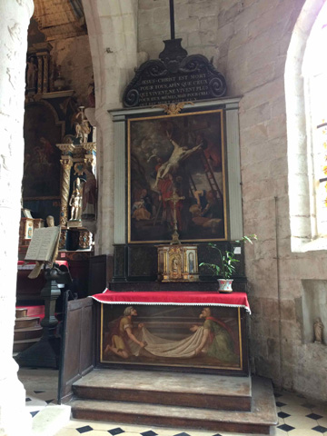
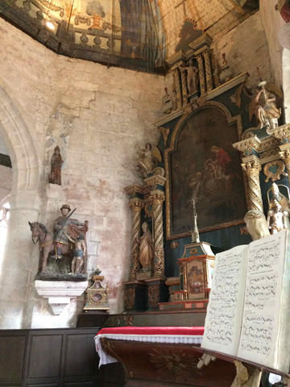
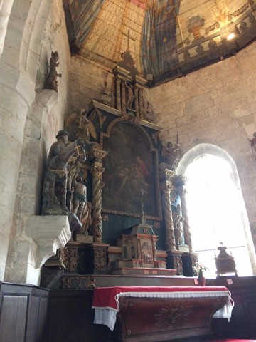
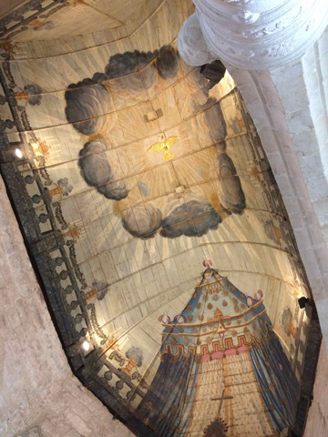
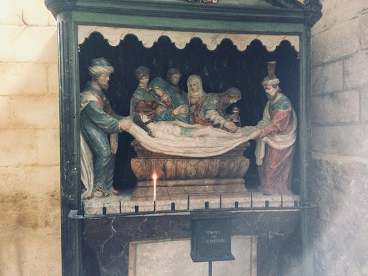
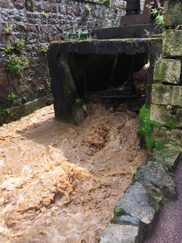
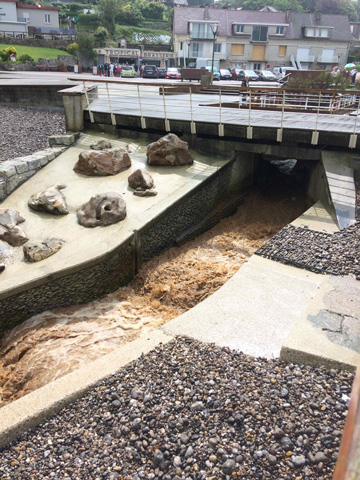
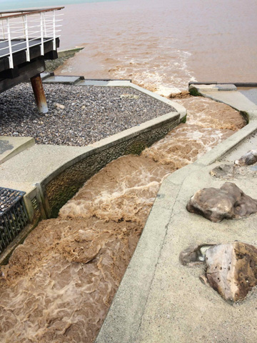
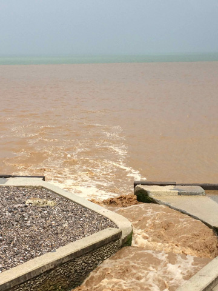
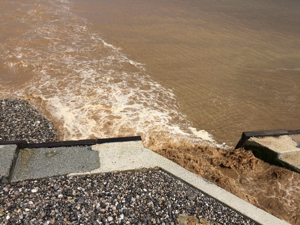
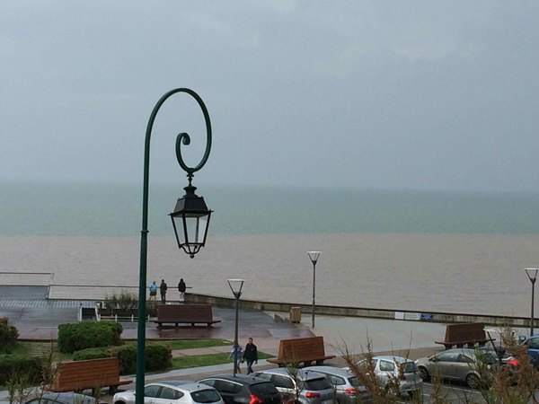